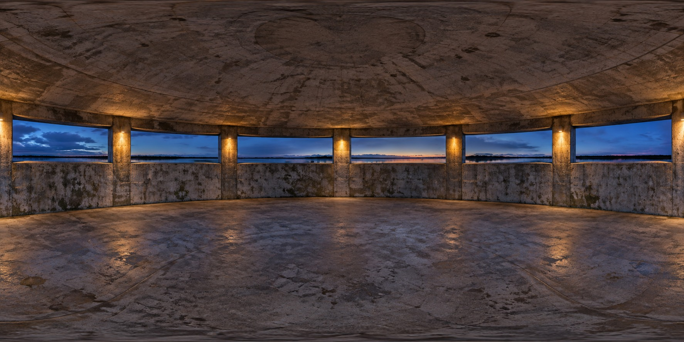

VISITOR NOTES
No notes yet. You can leave the first.
Opening the wall…
ANONYMOUS · COMMUNITY WALL
What would you leave for someone still finding their way?
0 / 240
Anonymous to other visitors. Leave out names, contact details and private information. Notes are visitor contributions, not Tommie’s words.
Anonymous visitor